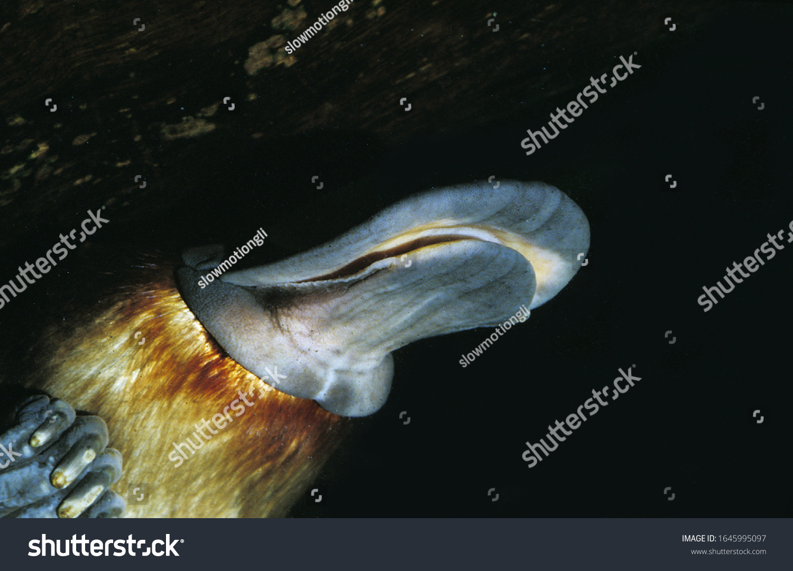

O ornitorrinco (nome científico: Ornithorhynchus anatinus, do grego: ornitho, ave + rhynchus, bico; e do latim: anati, pato + inus, semelhante a: "com bico de ave, semelhante a pato") é um mamífero semiaquático natural da Austrália e Tasmânia. É o único representante vivo da família Ornithorhynchidae, e a única espécie do gênero Ornithorhynchus. Juntamente com as equidnas, formam o grupo dos monotremados, os únicos mamíferos ovíparos existentes. A espécie é monotípica, ou seja, não tem subespécies ou variedades reconhecidas.
O ornitorrinco possui hábito crepuscular e/ou noturno. Preferencialmente carnívoro, a sua dieta baseia-se em crustáceos de água doce, insetos e vermes. Possui diversas adaptações para a vida em rios e lagoas, entre elas as membranas interdigitais, mais proeminentes nas patas dianteiras. É um animal ovíparo, cuja fêmea põe cerca de dois ovos, que incuba por aproximadamente dez dias num ninho especialmente construído. Os monotremados recém-eclodidos apresentam um dente similar ao das aves (um carúnculo), utilizado na abertura da casca; os adultos não têm dentes. A fêmea não possui mamas, e o leite é diretamente lambido dos poros e sulcos abdominais. Os machos têm esporões venenosos nas patas, que são utilizados principalmente para defesa territorial e contra predadores. Possui uma cauda similar à de um castor.
As características atípicas do ornitorrinco fizeram com que o primeiro espécime empalhado levado para a Inglaterra fosse classificado pela comunidade científica como um embuste. Hoje, ele é um ícone nacional da Austrália, aparecendo como mascote em competições e eventos e em uma das faces da moeda de vinte centavos do dólar australiano. É uma espécie pouco ameaçada de extinção. Em 2008 pesquisadores começaram a sequenciar o genoma do ornitorrinco e descobriram vários genes compartilhados tanto com os répteis como com as aves, mas cerca de 82% dos seus genes são compartilhados com outras espécies de mamíferos já sequenciadas, como o cão, a ratazana e o homem.